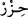

onlardan korumak için dursun. Seninle berâber namaz kılan kimseler silahlarını alsınlar,
sakın silahlarını bırakıp terketmesinler. Âyette “almak” tâbirinin kullanılması sanki
silahlarını ilk defa aldıklarında nasıl dikkat ediyorlarsa korku namazında da yanlarına
almakta öyle îtina göstermeleri gerektiğini bildirmek içindir. Seninle berâber namazda
olanlar “secde ettiklerinde” rekâtlarını tamamladıklarında “arkanıza geçsinler” yâni
sizi korumak için düşmana karşı koymaya gitsinler. “Sonra henüz namaz kılmamış olan
diğer grup gelsin.” Bunlar, düşman karşısında sizi korumak için duran gruptur. “Ve
seninle berâber namazlarını kılsınlar.” Yâni geri kalan rekâtı kılsınlar.
Âyette her iki grubun geri kalan rekâtlarının durumu açıklanmamıştır. Bu, sünnetle
açıklanmıştır. İbn Ömer ve İbn Mes’ûd (r. anhümâ)’dan rivâyet edildiğine göre: Hz.
Peygamber (a.s.) korku namazı kıldığı zaman âyette ifâde edildiği gibi önce ilk gruba,
sonra da ikinci gruba birer rekât kıldırdı. Sonra ilk grup geldi ve onlar kırâatsiz olarak
kılamadıkları son rekâtı kazâ edip selam verene kadar diğer grup düşmanın karşısına
gitti. Sonra ikinci grup gelip kılamadıkları birinci rekâtı kazâ ettiler. Böylece iki grup
da iki rekât kılmış oldu.[135]
Korku namazının bu şekilde kılınması, kişi yolcu olduğunda veya namaz sabah namazı
ise böyledir. Çünkü bir rekât, namazın yarısıdır. Ancak ikâmet hâlinde veyâ namaz
akşam namazı ise imam birinci gruba ilk iki rekâtı kıldırır. Çünkü bu iki rekât, namazın
yarısıdır.
“Kâfî”de şöyle denmektedir: Akşam namazında imam hata edip de birinci gruba bir
rekât, ikinci gruba iki rekât kıldırırsa her iki grubun da namazları bozulur.
Düşman veyâ yırtıcı hayvan korkusu sebebiyle kılınan korku namazının keyfiyetinin
tafsîlâtı, furû-ı fıkhın “Korku Namazı” bölümündedir. Oraya mürâcaat edilmeli.
“Onlar da” bu grup da “ihtiyat tedbirlerini ve silahlarını alsınlar.” Bu da tedbirli
olmak ve teyakkuz halinde bulunmaktır.
“İhtiyat ve korunma mânâsındaki “
” kelimesi mânâ ismidir. Sâdece silah gibi
maddi şeylerle irtibatlandırılan almak mânâsındaki “ahz” kelimesi ile alakalandırılır.”
Korunmaya nasıl taalluk eder dersen, derim ki: Bu kinâye ile istiâre kabîlindendir.
Çünkü “
” savaşçının kullandığı bir savaş âletine benzetilmiş, “alma” fiilinin ona
taalluk etmesi ise içeride gizlenen bu teşbîhe delil sayılmıştır. Böylece hayâlî (tahyîlî)
istiâre meydana gelmiştir. “Alma”nın “silahlar”a hakîkî olarak “ihtiyât=
”a mecâzen
isnâdından hakîkat ile mecâzın birleştirilmesi lâzım gelmez. Çünkü “almak” hakîkat
üzere getirilmiş ve mecâzî mânâ ona isnâd edilmiştir. İyi anla.
Bu defa silahlarını yanlarına almalarına ilâveten ihtiyat tedbirlerini almalarının
emredilmesi herhalde kâfirlerin Peygamber (a.s) ile beraber namazda olan grubun
meşgul olduklarını bilmeleri ihtimâline göredir. Önceki defa yalnız silahlarını yanlarına
almalarının emredilmesi ise belki de kâfirler, namaz kılan mü’minleri harp için ayakta
bekliyorlar zannettikleri içindir. Her iki grubun tedbirlerini ve silahlarını almakla
mükellef tutulmaları, namazla meşgul olmanın silah bırakılma ve onu hatırdan çıkarma
ihtimâliyle âyetin gerisinin de ifâde ettiği üzere düşmanın hücûmuna delil olmasına